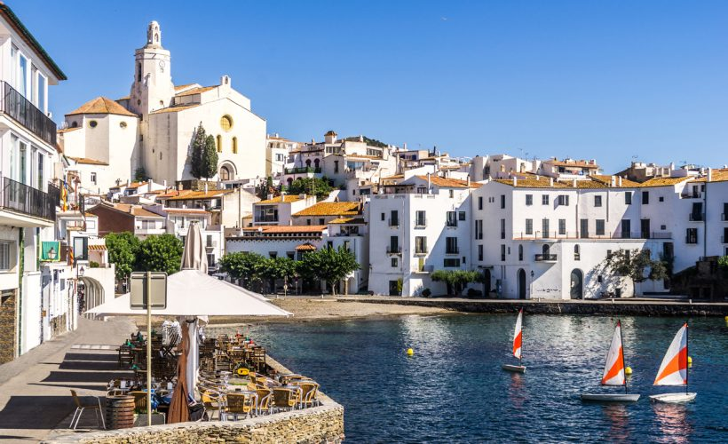
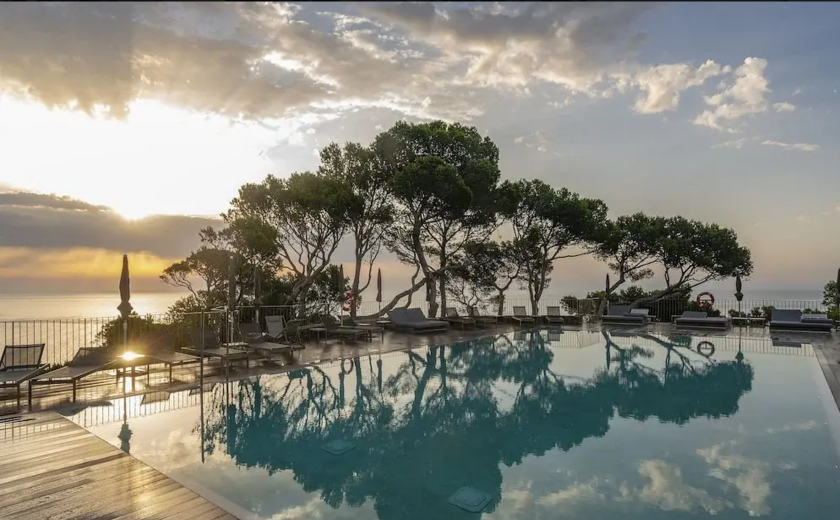

Sábado, 5 de diciembre
Salimos de casa
Café para el camino, tu mano en la mía y rumbo al norte, hacia el Alt Empordà. Dos días solo para nosotros.
⛪Monasterio de Sant Pere de Rodes
Un monasterio benedictino de los siglos X y XI, colgado de la sierra sobre el Mediterráneo. Su iglesia románica y su claustro fueron de los más ricos de Cataluña. Le dedicamos algo más de una hora, para abrazarnos frente al mar desde lo alto y respirar juntos el silencio.

🚶Cadaqués
Un pueblo blanco de pescadores al final de una carretera de curvas. Casas encaladas frente a la bahía, calles empedradas y la luz que atrajo a Dalí y a Picasso. Un lugar hecho para caminar muy juntos.

🚶Un paseo por Cadaqués
Un rato sin prisa por las calles empedradas y la orilla de la bahía, de la mano. Paradas para un beso, una caricia y una foto de los dos, y callejuelas que suben hacia la iglesia para perdernos juntos. Sin entradas ni horarios.
🍴Comer en Cadaqués
Dos mesas para elegir, a pocos pasos del paseo marítimo. Una comida larga, mirándonos y compartiendo platos.
🏨Parador de Aiguablava
Llegamos con la última luz del día. El Parador se asoma a la cala de Aiguablava, rodeada de pinos y aguas verdes. Primero la habitación, luego la terraza, abrazados mientras cae el sol.

🌅Tarde para nosotros dos, sin prisas
Una copa en la terraza, un descanso abrazados o un paseo hasta Fornells por el camino viejo, unos 20 minutos entre pinos y rocas, de la mano. Sin horarios, solo cuidarnos y estar juntos.
🍴Cena
La noche especial del fin de semana. Una cena pausada, brindando por nosotros.